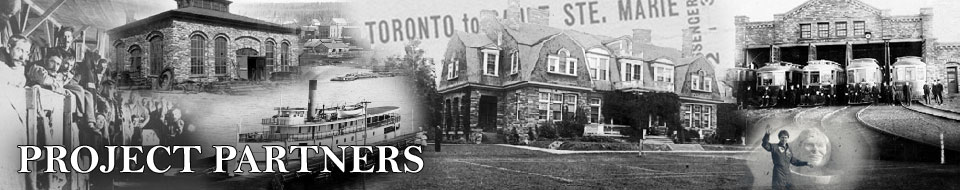

Sault Ste. Marie Public Library
In the years prior to industrialization, Sault Ste. Marie was a small, rugged and sparsely populated frontier community. Those few residents who found themselves living in Sault Ste. Marie – persons such as Hudson’s Bay Company officials, clergymen and government appointees – tended to have a strong reading background. They carried their personal libraries with them and ordered selected volumes through friends and family members who lived in urban centres so as to have a ready supply of books available in the remote areas where many of them were required to serve.
Despite the fact that Mechanic’s Institutes, the forerunners of public libraries in Ontario and elsewhere, began developing on other areas of the province following Confederation, the movement did not extend to Sault Ste. Marie. This lack of a library in Sault Ste. Marie led to the formation of a Literary Society in 1873. The purpose of the Society was to enable the members to meet on a weekly basis to exchange books amongst themselves and to discuss what they had read. The activities of the Literary Society were somewhat supplemented by the formation of a library in connection with the Methodist Sabbath School in 1875. The Sabbath School library was created and funded in an ongoing fashion by the Methodist Church congregation through social and festival-type events. Unfortunately, records do not indicate how long either the Literary Society or the Sabbath School library continued to function.
It is known, however, that in 1890 a branch of the Mechanic’s Institute was finally formed in Sault Ste. Marie at just about the time that most other communities were in the process of closing their Institutes for financial reasons. The Sault Ste. Marie Mechanics Institute, like others in Ontario, found that subscriptions, for which patrons paid $1.00 per year, lagged and that there was frequently no money to pay the bills including the rent. As a result, the Institute regularly moved its base of operations although for some portion of its existence it was housed in the Dawson Block at the corner of Queen and East Streets. The first librarian, a local woman by the name of Miss Vaillancourt was hired in 1894 to serve variously as the librarian and the janitor. The agreed upon wage was $6.00 per month during the summer months and $7.00 per month during the winter months given all of the additional work she would have to do hauling coal and shoveling ashes. Francis H. Clergue, local industrialist, received the thanks of the Mechanics Institute in 1895 when he obtained 15 subscriptions. The funds undoubtedly came in handy given the fact that the Institute’s appeal to the Town for a donation of $50.00 had yielded only $25.00 In spite of these hardships, the Institute continued to operate and by 1896 owned a collection of 967 books.
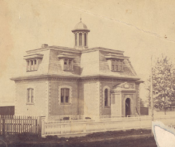 Town Hall and First Public Library c 1896. Collection of the Sault Ste Marie Public Library Archives. |
In August of 1986, Dr. Samuel P. May, Superintendent of Public Libraries, addressed local officials regarding the advantages of having a free library as opposed to a subscription-driven Mechanics Institute. Local municipal officials adopted the concept and, in November of 1896, the first meeting of the Public Library Board of the Town of Sault Ste. Marie was held. At this inaugural meeting John Dawson was elected President of the Board and W.W. Ireland was appointed Secretary/Treasurer. Miss Vaillancourt remained as librarian and janitor. The library was housed in two small rooms on the second floor of the Town Hall.
By 1901 the library had outgrown its limited space in the Town Hall. Russell Halton, a local architect, took it upon himself to contact Andrew Carnegie, a known benefactor of libraries in Canada and the United States. Initially, Town Council was reluctant to accept any money from Carnegie for two (2) reasons. The donation carried with it an obligation on the part of the Town to maintain the library once it had been constructed. It also bore the proviso that the Town would provide the land for the construction of a library. The Town decided to reject the offer of funding on the grounds that it planned to improve the existing fire hall and to use the improved space for a library. After considerable debate, however, Sault Ste. Marie became one of 125 communities in Canada to receive this type of financial assistance. The library moved into the building financed by the grant in 1903. In addition to the library, the building complex housed the Post Office and a Public Hall in the same wing as the library as well as the Town Hall and Fire Hall in adjoining wings. The Public Hall was to be rented out for educational purposes only; it was not to be rented for tea meetings or any other type of social meeting. |
The site chosen for the construction of the library was as controversial as the decision to build the library. Councilors William H. Munro and Dr. Edwin Gimby disagreed with the site chosen on Queen Street just east of East Street on the grounds that the site was not central. They were of the opinion that it was unfair to West End residents and stated that the building should be constructed on a site more readily accessible to the entire community. They insisted that the final decision regarding location not be made until such time as the ratepayers had an opportunity to indicate where they wanted the building to be constructed. Although a special meeting was held on the subject, Mayor William H. Plummer reminded the attendees that the plan for the construction of a library and municipal building had been passed in principal and advised that a single part of the decision could not be rescinded. The building so recently constructed in 1903 was destroyed by fire in 1907. The fire alarm sounded at approximately 8:50 p.m. on March 6 when a fire was noticed in the ceiling of the library near the back of the building. The cause of the fire was thought to be faulty wiring. The fire was so extensive that even the fire brigade from Sault Ste. Marie, Michigan crossed the River to help fight it. During the reconstruction period, the public library moved into the Harris Block at the corner of Queen and Spring Streets. A collection of some 800 books had either been saved or donated were made available so that library services could continue to be offered to the public. |
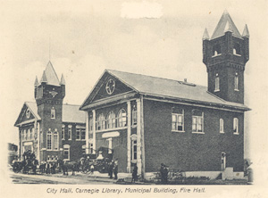 Carnegie Library 1903. Collection of the Sault Ste Marie Public Library Archives. |
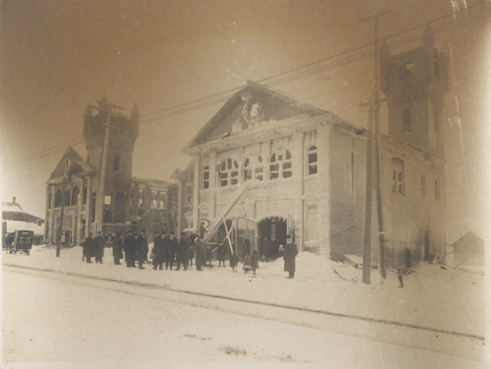 Carnegie Library destroyed by fire, 1907. |
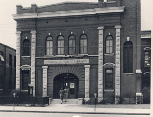 Second Carnegie Library built 1909. |
Andrew Carnegie was approached a second time for funding. He granted the funds albeit reluctantly. The first grant had been for the construction of the library had been in the amount of $10,000.00 The building and contents had been insured, however, for a mere $4,500.00. The explanation offered to the Carnegie Foundation by C.J. Pim, Town Clerk, was that the Town had not seen the necessity of insuring the building and contents for full replacement value given the proximity of the fire hall. Ultimately, the Carnegie Foundation relented and donated the $5,500.00 difference between the original grant and the settlement provided by the insurance company but not without first advising the local council that they were "penny wise and pound foolish". The building was completed for the second time in 1909, this time at a cost of $15,500 exclusive of books and site.
In 1919 the first branch library – the West End Branch – was opened at 290 Wellington Street West. It was specifically called the West End Branch because it was not considered proper to perpetuate the use of the name Steelton given the fact that Steelton had amalgamated with the City of Sault Ste. Marie in 1918. Up until the time the circulating library was opened, there had merely been a reading room at this location. Once the library was opened, the Main Library shipped 800 volumes to the West End Branch. Library cards were not library-specific and a card issued by the Branch could be used at the Main Library and vice versa. The West Branch was closed temporarily in 1923 due to financial problems but reopened in 1924. It remained open serving the residents of the West End of the community until it closed permanently on 30 June 1992.
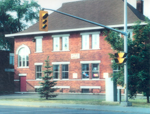 Steelton Public Library, 1924-1992. Collection of the Sault Ste Marie Public Library Archives. |
Over the years, the library instituted a number of community out-reach programs in an attempt to introduce the library to a broad cross section of the community which might not otherwise have access to such services. An extension service was set up in Bayview during the summer months commencing in 1935 and continued to operate for a number of years. Then, beginning 2 October 1948, the public library began broadcasting a children’s radio program on CJIC radio. June Munro, the children’s librarian, read stories every Saturday morning for fifteen minutes beginning at 9:30 a.m. The library also offered in-school library services to both the Sault Ste. Marie Public Board of Education and the Sault Ste. Marie Roman Catholic Separate School Board beginning in 1966. Library staff would select a broad cross-section of books which were both age-appropriate and curriculum specific and take then into the schools where the students were allowed to sign out the books of their choice. The service was established at a time when there were few school libraries and no teacher librarians. After twenty years of continuous operation, the classroom collection service was discontinued by the Public Library as an increasing number of schools developed their own libraries and teacher/librarians were hired to operate them. |
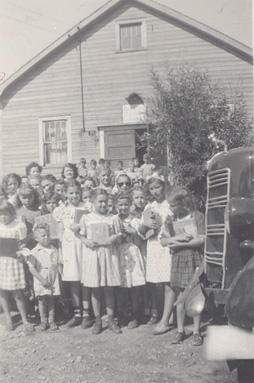 Bayview Library |
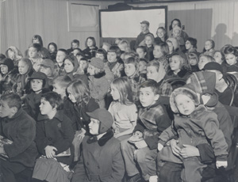 Library Story Hour, 1951 |
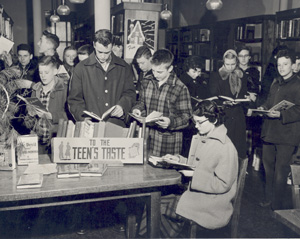 School Tour of Library |
In 1964, City Council unanimously agreed to construct a new public library as Sault Ste. Marie’s Centennial Year project. The needs and demands of the community extended well beyond the physical capabilities of the Carnegie Library that had served the community well since 1909. The space allocated for a library was clearly insufficient. The space, designed to accommodate 2,000 books then held in excess of 40,000 books. The library had simply outgrown its facilities. The old fashioned design – which had been state of the act when the building was constructed – had poorly placed windows, over-sized heating pipes and limited space for both shelving and seating. When the subject of a new building went before City Council, Council and the Library Board established criteria for a new building: it should be modern, centrally located and easily accessible. Further, it should have adequate parking and it should be large enough to accommodate all patrons with room for expansion. In short, Council and the Library Board wanted a facility that would be readily recognizable as a "social intelligence centre" with the capacity to meet the demand for ever-increasing community services.
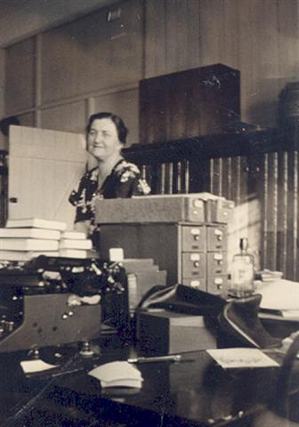 Miss Jean Smith, Chief Librarian |
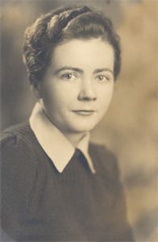 Miss Kay Climie, Chief Librarian |
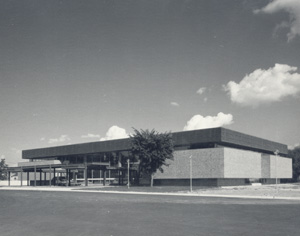 Sault Ste. Marie Public Library |
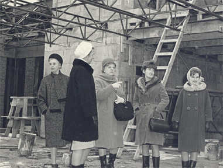 Tour of Centennial Library, 1965 |
The timing of the Centennial grants could not have been more advantageous for the City of Sault Ste. Marie. Early in the planning stages it was decided that the most appropriate location for the new library would be on the waterfront in the vicinity of Clergue Park. Applications were hurriedly submitted for federal and provincial grants to offset the cost of constructing the $800,000 structure. Marani, Rounthwaite and Dick designed the building that was subsequently constructed by Newman Brothers Construction. As a reflection of the major industry in the community, the exterior of the building was constructed of Algoma Cor-Ten steel, a special alloy designed to rust only until it attained a deep chocolate brown patina. When the new library officially opened in July of 1966, it was generally regarded as the jewel of the local waterfront.
The north end of the upper level of the library was exclusively for the use of children and young people. The balance of the upper level was allocated for adult use and office space. The lower level housed The Story Book Room (a children’s programming area), The Centennial Room (an exhibit and lecture area), the film distribution centre and public washrooms.
Over the years, the library underwent a number of renovations. An elevator was installed in 1982 making the building accessible to handicapped persons. Then, in April of 1993 a series of major changes began. The Centennial Room was closed and the administrative offices relocated to that space. The building was closed to the public temporarily in July so that major structural changes could be made. The wall between the children’s area and the adult area was removed making the upper level one large, multi-purpose room. The reference and circulation desks were relocated to create a more user-friendly and space-efficient atmosphere.
As the population of the community spread eastward, the need for library facilities in the east end became apparent. As a result, an east branch library opened in the Churchill Plaza in March, 1966. This particular library was intended to be a circulating library only not a reading room or reference library. The rental accommodations used by the East Branch were expanded in 1981 when additional space became available.
The Korah Branch of the Main Library opened on 1 December 1967 in a portion of the building that previously housed the Korah Township offices. The main floor of the building had been vacated following the amalgamation of Korah and the City of Sault Ste. Marie on 1 January 1965. When the Emergency Measures Organization moved from the lower floor of the building in 1975, this level was renovated to provide room for an expanded Children’s Department.
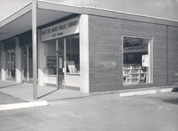 Churchill Branch, 1966 |
By the mid 1990s the Sault Ste. Marie Public Library had reached a total of more than 18,000 registered patrons exclusive of those persons who drop in on a regular basis to read the magazines and newspapers, use the microfilm readers and study do research in the study area. The libraries have 180,000 items in their collections not including archival materials and there is an annual circulation of materials that extends to one half million. By the end of 1997 all three branches of the library were to be fully automated. | 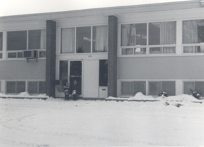 Korah Branch |
Sault Ste. Marie Museum
The first Historical Society in Sault Ste. Marie was formed in 1920, spurred by a visit to the City by Dr. J.H. Coyne, then President of the Ontario Historical Society and a member of the Dominion Sites and Monuments Commission. Dr. Coyne addressed a dozen interested members of the community -all male - at a meeting held at the home of Judge Frederick Stone. At the conclusion of the meeting, a committee was struck to draft a constitution to be submitted to all persons in the community interested in matters historical and a slate of officers was elected.
Membership in the neophyte Historical Society almost doubled during its first year of operations. Some twenty-three (23) men were members at the time of the first annual meeting of the Society. At this first annual meeting, the secretary proudly stated that five public meetings had been held during the course of the year and that four original papers had been delivered. The Society was actively involved in the collection of books and pamphlets for research purposes. The Sault Ste. Marie Historical Society Papers and Records, Annual Report for 1920-1921 (Volume 1) was published at a cost of $158 to illustrate the activities of the Society during the previous year.
The Historical Society continued to be active for a further three (3) years. It continued to supplement its library holdings, to present historical papers and to press for the placement of plaques commemorating historical events. The Society suddenly disappeared in 1924. There has long been speculation that the reason for the disbanding of the Historical Society stemmed from the fact that repeated applications to the Ministry of Education for a grant to defray the cost of the publication of the First Annual Report were routinely rejected leaving the Society with a deficit of $158. This debt prevented the Society from staging any additional programming or from undertaking any further publications. The debt load and the inability to promote local history in any tangible fashion undoubtedly contributed to a feeling of frustration that fuelled the decision to discontinue the Society.
The Historical Society reemerged in January, 1951 when it became known that Lt. Col. Louis H. Derrer had convinced the Department of Defence to allocate a room for use as a library and museum in the Armoury that was then under construction on Pine Street. At the instigation of two (2) members of the original Society, S. George Stone and Tracy E. Carmichael, an organizational meeting was held at City Hall resulting in the creation of the Sault Ste. Marie and 49th Field Heavy Anti-Aircraft Regiment R.C.A. Historical Society. Needless to say, the affiliation with the Regiment had a significant impact on the collection and display of artifacts and library materials as well as on the composition of the membership of the Society. Plans for what was commonly referred to as the "Downtown Historical Society" were placed on hold when it became apparent that an historical society associated with the Regiment would have a place to meet as well as a place to store and display its materials free of charge.
The Department of Defence allocated space for the library and museum but responsibility for furnishing the room rested with the Historical Society. Sir James Dunn, who was at that time the president of Algoma Steel, donated all of the necessities from lamps and rugs to tables, chairs, bookshelves and display cases. In 1956, a secretary/treasurer/curator was hired at an annual salary of $500 to revamp the displays and to institute a system of record keeping and labeling.
A revamping of the Regiment in 1962 from a heavy anti-aircraft regiment to the Sault Ste. Marie 49th Field Regiment gave rise to the incorporation of the Historical Society as the Sault Ste. Marie and 49th Field Regiment R.C.A. Historical Society. By this time several women, most notably the inimitable Gladys McNeice, had become involved in the Society and Museum. It was as a result of the unflagging efforts of Mrs. McNeice and the Historical Society that the Ermatinger Old Stone House was saved from demolition and ultimately turned into an interpretive museum and major tourist attraction operated by the Sault Ste. Marie Historic Sites Board.
As the Library and Museum operated by the Historical Society gained in renown and local popularity, problems with the location surfaced. The room identified as a Library and Museum was located in an obscure corner on the second floor of the Armoury. Potential visitors had to make their way through a maze of corridors and staircases to reach the room. In addition, physical limitations including a lack of space for displays and storage and uncontrollable environmental conditions became increasingly problematic.
The Museum began looking for a new home as early as 1972. A number of possibilities were investigated including a joint venture agreement with the Sault Ste. Marie Historic Sites Board under which the Historical Society would manage the collections and displays housed in a number of local historic sites including the Armoury, the Ermatinger Old Stone House, the then Marine Museum and City Hall. After considerable discussion, the plan was abandoned.
The Museum remained in the Armoury despite the inherent problems the location presented. Temporary remedial measures were taken to alleviate the most pressing difficulties but with the introduction of minimum museum standards by the Ministry of Culture and Recreation in 1980, the Museum was faced with an unenviable dilemma: find new quarters that met the new standards or risk losing its government funding.
With the assistance of then M.P. for Sault Ste. Marie, Ron Irwin, the Historical Society entered into negotiations with Public Works Canada for the acquisition of the third floor of the Old Post Office Building located at the corner of Queen and East Streets. Much to the surprise and delight of the Historical Society, Paul Cosgrove, then Minister of Public Works Canada, offered to sell the building and the land to the City of Sault Ste. Marie for approximately $70,000, one half of the actual value of the land and building. Pursuant to a resolution of City Council dated 11 February 1982, the City agreed to purchase the building at the stated price for use as a Museum by the Sault Ste. Marie and 49th Field Regiment Historical Society. The Museum was successfully relocated to the new site in the late spring of 1983. It opened to the public in December, 1983.
| 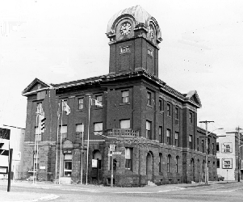 | Since its opening, exhibit galleries have been created on each of the buildings three- (3) floors. In addition to its largest artifact – the building itself – the Museum is home to some 27,000 artifacts, 11,000 of which are paper or archival. The Museum, which continues to be operated by the Sault Ste. Marie and 49th Field regiment Historical Society, is an integral component to the community’s cultural infrastructure. |
Michipicoten Township Public Library
The Michipicoten Township Public Library officially opened in May, 1954 in the basement of the Sir James Dunn Public School. The Library, which was managed on a day-to-day basis by a volunteer librarian, was an instant hit. It was reported to be one of the most popular municipal institutions second only to the tax collector’s assessment roll. Ten years prior to the opening of the Michipicoten Township Public Library, an abortive attempt had been made to start a library. Due to lack of support, however, the Wawa Public library Association discontinued operations.
The Michipicoten Public Library gradually outgrew its space in the school. When the new Township of Michipicoten Municipal Building was in the planning stages, space was allocated for a new library. The library was relocated when the building was completed in 1971. Renovations to the library portion of the building provided an additional 500 feet of useable space. All areas of the library were made handicap accessible.
The Michipicoten Public Library has a collection of approximately 60,000 books and videos as well as a local history collection. Out of a population of 4,600, more than 3,600 residents of Wawa are members of the library. A staff of four (4) including a Head Librarian maintains the library. A Board of Directors consisting of seven (7) municipally appointed members oversees the operation of the library.
The Michipicoten Township Public Library recently entered the age of technology with the introduction of an Internet workspace. Patrons of the library over the age of 18 years are welcome to use the Internet facilities in hourly increments for a small fee. This rapidly growing and user-friendly library continues to be an essential element in the fabric of Wawa’s cultural community.